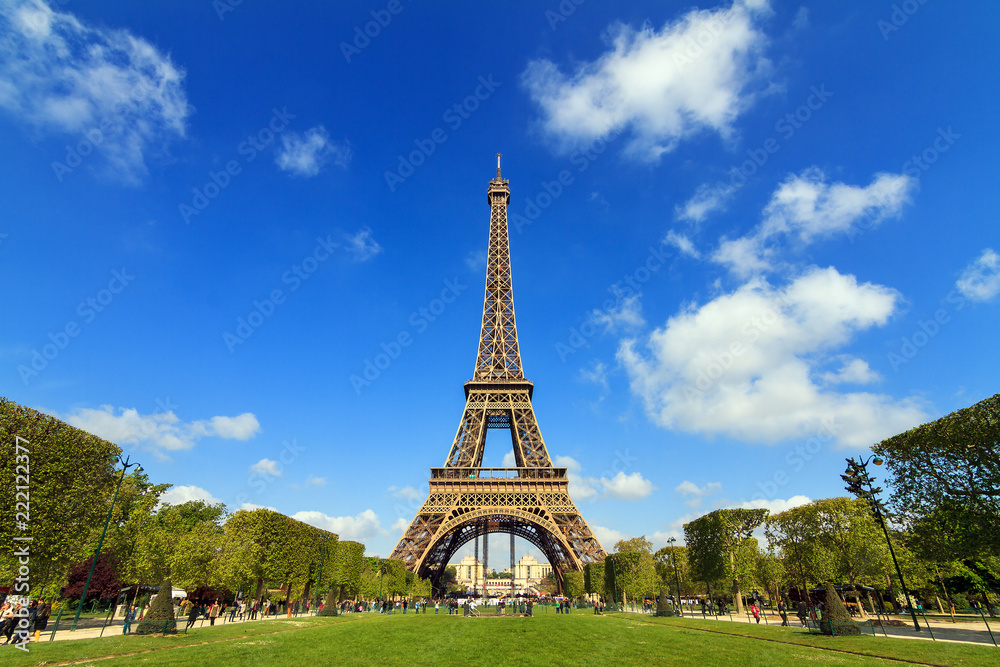
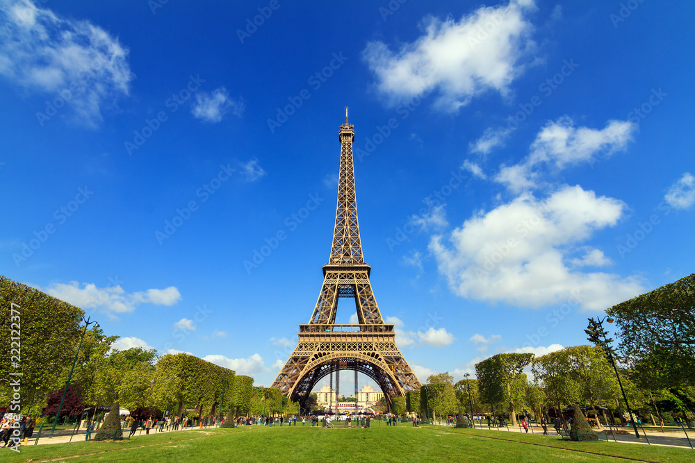

These are some of the coolest places where people have to visit at least once in their life time.
Destination 1: Grand Canyon


The Grand Canyon, a geological wonder located in the state of Arizona, USA, stands as one of the world's most awe-inspiring natural landscapes. Carved over millions of years by the relentless forces of the Colorado River, the Grand Canyon is a testament to the Earth's intricate geological history. Stretching approximately 277 miles (446 kilometers) long, up to 18 miles (29 kilometers) wide, and with depths reaching over a mile (1.6 kilometers), the canyon offers a breathtaking display of layered rock formations, each stratum representing a chapter in the planet's geological narrative.
The canyon's mesmerizing palette of colors, ranging from deep reds to soft yellows, changes dynamically with the shifting sunlight, creating a visual spectacle that captivates visitors. Beyond its stunning visual appeal, the Grand Canyon is a haven for biodiversity, hosting a diverse array of plant and animal life. The South Rim, a popular entry point for visitors, provides panoramic vistas and numerous hiking trails, while the North Rim offers a more secluded experience. Whether exploring its rim, embarking on a river rafting adventure, or simply standing at its precipice in quiet contemplation, the Grand Canyon is a testament to the sheer power and beauty of nature, inviting all who encounter it to marvel at its grandeur.
Destination 2: Yellow Stone National Park
Nestled in the heart of the Rocky Mountains, Yellowstone National Park stands as a testament to the raw and untamed beauty of the natural world. Established in 1872, it proudly holds the title of the first national park globally, a sprawling expanse that spans across Wyoming, Montana, and Idaho. Home to mesmerizing geothermal wonders, including the iconic Old Faithful geyser, the park boasts a diverse ecosystem teeming with wildlife such as grizzly bears, wolves, and herds of majestic elk. Visitors are treated to a kaleidoscope of landscapes, from the vivid hues of Grand Prismatic Spring to the rugged canyons of the Yellowstone River.
As you embark on your Yellowstone adventure, be prepared for a journey into the heart of Mother Nature's grandeur. Pack essentials like sturdy hiking boots for exploring the park's vast network of trails, a reliable camera to capture the breathtaking scenery, and layers of clothing to adapt to the park's ever-changing weather. Whether marveling at the roaring waterfalls or witnessing the dramatic eruptions of geysers, Yellowstone promises an immersive experience that transcends the ordinary and beckons you to discover the wonders that have captivated explorers for centuries.
Destinagtion 3: The Effiel Towver
 

Standing tall against the Parisian skyline, the Eiffel Tower is an enduring symbol of romance, elegance, and architectural brilliance. Completed in 1889 as the centerpiece of the World's Fair, Gustave Eiffel's masterpiece has become an iconic landmark, drawing millions of visitors each year. Its intricate lattice structure, rising 324 meters above the City of Lights, offers panoramic views of Paris, showcasing its timeless allure. Whether bathed in the golden hues of dawn or shimmering under the city's evening lights, the Eiffel Tower is a testament to the melding of artistry and engineering, inviting all who gaze upon it into a world of enchantment.